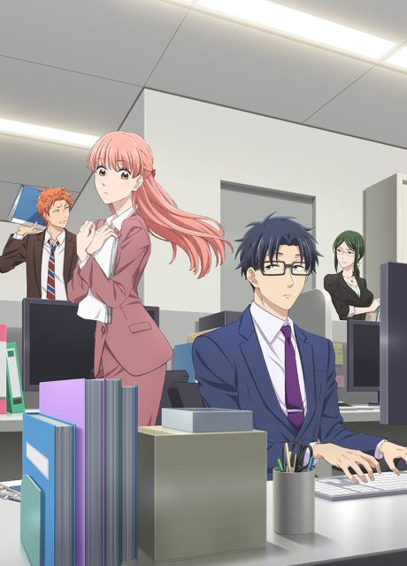
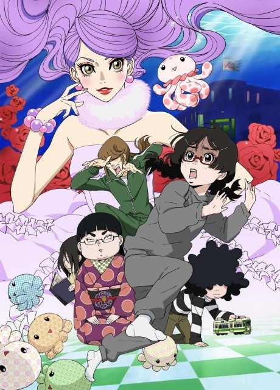
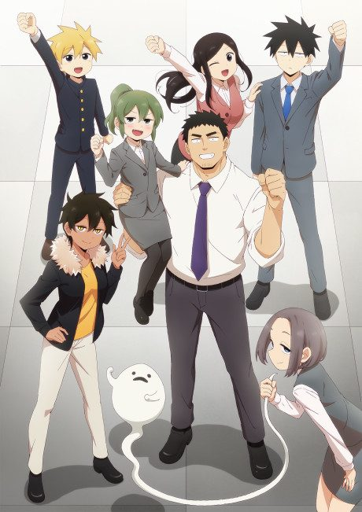
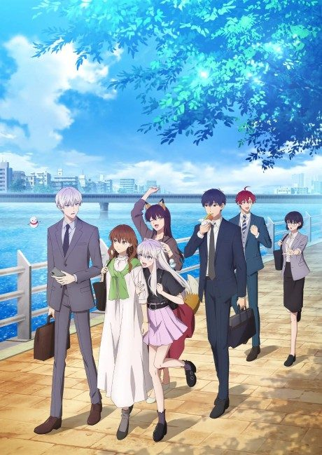
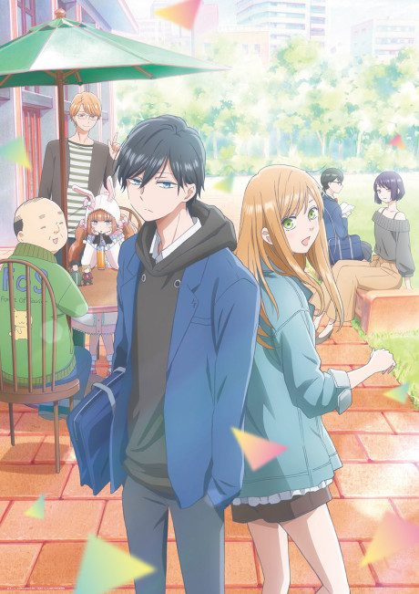
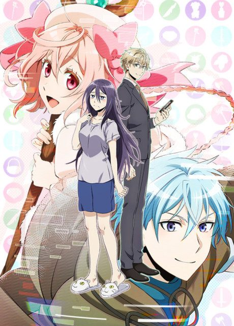
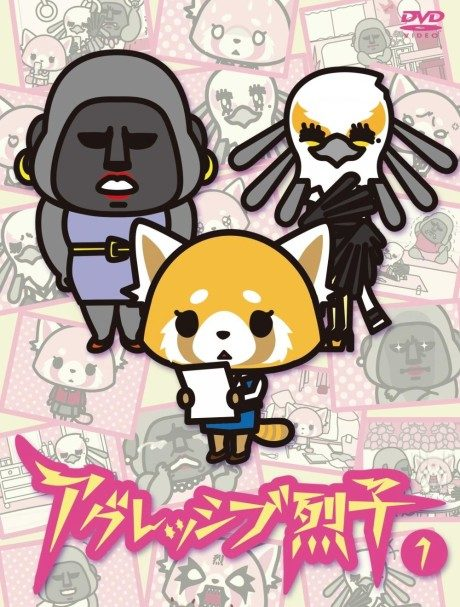
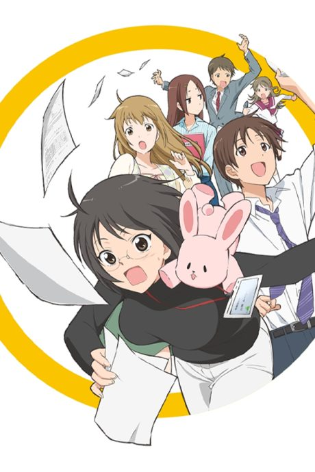

Wotakoi: Love is Hard for Otaku
ヲタクに恋は難しい
Narumi, an office worker who hides her otaku hobbies, starts dating Hirotaka, her childhood friend and fellow geek.
After the anime, read the manga from Chapter 51.
7.8AniList score
—Animeter, no votes yet
11episodes
Rate it or report where you stopped
Is it worth pushing through?
Built from what visitors report across all 11 episodes.
Loading reports…Checking what other people said about this one.
Sign in above with your email to add your report.
More like Wotakoi: Love is Hard for Otaku

Manga Ch. 227.9
Manga Ch. 427.4
Manga Ch. 417.2
Unclear7.0
I Can't Understand What My Husband Is Saying
Manga Ch. 427.7
Done7.3
Original7.2
Manga Ch. 777.4
I Have a Crush at Work
Manga Ch. 767.4
Film8.2
Josee, the Tiger and the Fish
Original8.1
SHIROBAKO Manga Ch. 548.0
Manga Ch. 548.0